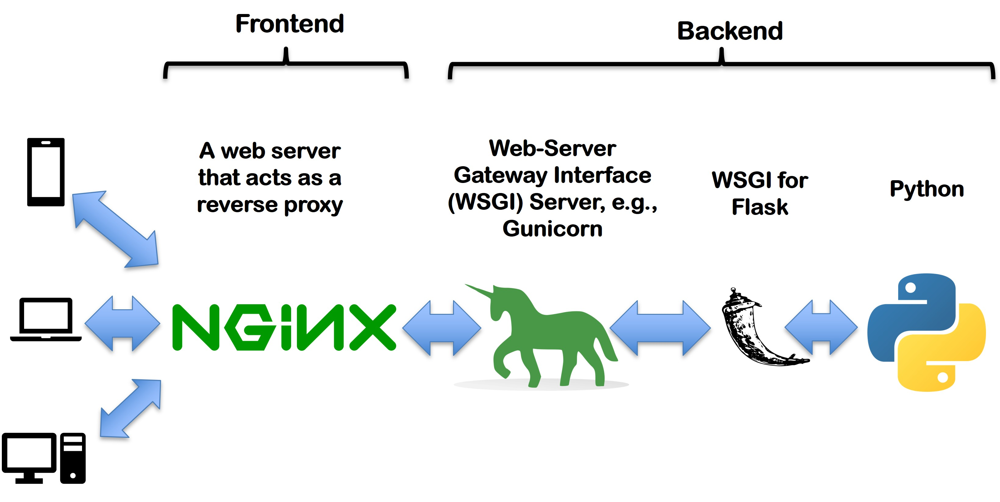

- Course Codes
- BBT 4206
- Course Name
- BBT 4206: Business Intelligence II (Week 4-6 of 13)
- Semester
- September to December 2026
- Lecturer
- Allan Omondi
- Contact
- aomondi@strathmore.edu
- Note
-
The lecture contains both theory and practice. This forms part of the practice.
It is intended for educational purposes only.
Recommended citation: BibTeX
Request Flow

- Client (Postman / cURL / one of the four frontends below)
Sends a request to
https://yourdomain/api/... - NGINX (reverse proxy)
Terminates HTTPS, serves static files, forwards
/api/...to Gunicorn. - Gunicorn (ASGI server)
Manages worker processes and translates HTTP into Python ASGI calls.
- Flask (this app,
api.py)Routes the request to the matching@app.routeand returns a response.
API Endpoints & Sample Frontends
Regression
SME Revenue Predictor
Predicts monthly revenue (KES) for an SME.
/api/v1/models/sme-revenue-regressor/predictions
Credit Risk Classifier
Predicts an SME loan applicant's risk category.
/api/v1/models/sme-credit-risk-classifier/predictions
Customer Segmenter
Assigns a mall customer to one of five segments.
/api/v1/models/mall-customer-segmenter/predictions
Cart Recommender
Recommends products for a shopping cart.
/api/v1/models/ecommerce-recommender/predictions